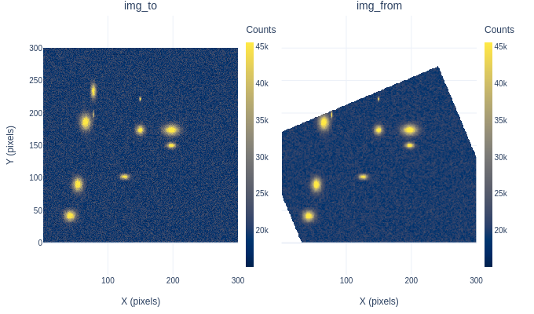
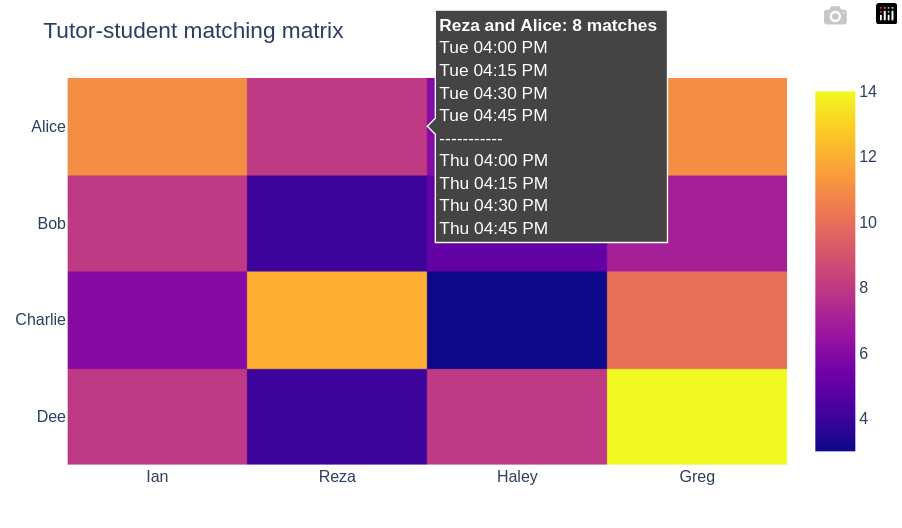
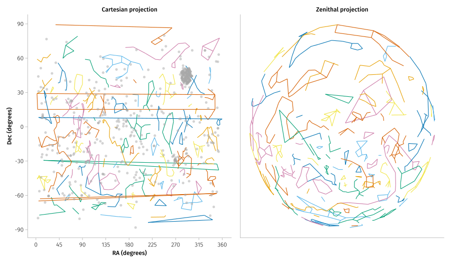
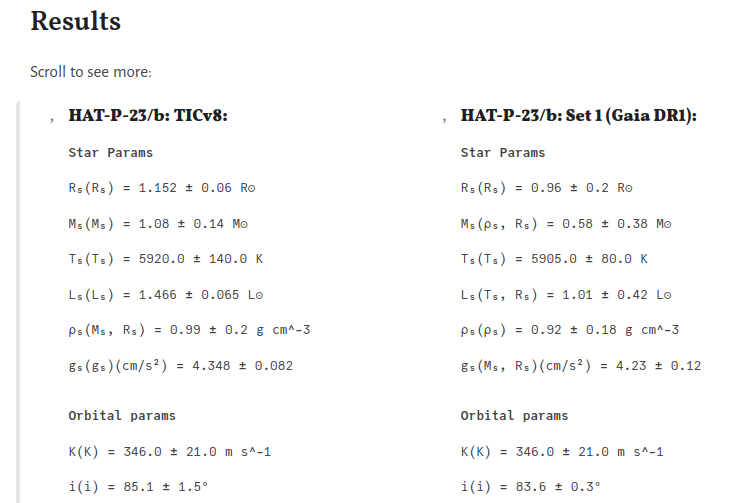
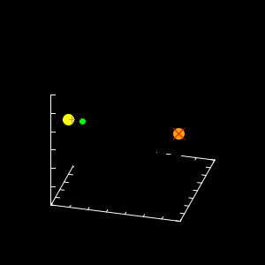
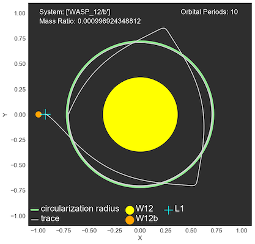

Astroalign.jl
Tutor-student matching
Exoplanet locator
System parameters calculator
Orbital trajectories
Population dynamics
Artificial energy loss
WASP-12/b system
WASP-12/b 2D
WASP-12/b 3D

Howdy, I'm Ian.
I did my PhD at the Center for Astrophysics | Harvard & Smithsonian studying the atmospheres of large exoplanets and writing software to help analyze them. I had the opportunity to work on all stages of the process, including observing with large ground-based observatories, extracting and reducing time series of raw spectral data, detrending of potential signals via different Gaussian Process (GP) and Principal Component Analysis (PCA) techniques, and model fitting with a range of statistical Bayesian inference frameworks including Markov Chain Monte Carlo (MCMC) and nested sampling to study the atmospheres of these other worlds.
I currently serve as an education and outreach astronomer for the Carl Sagan Center for Research at SETI. In my free time, I like to row on Lake Merritt, help maintain JuliaAstro and other open source projects, and help run Onaketa: an education non-profit dedicated to supporting Black and Brown youth in STEM.
We present a new ground-based visual transmission spectrum of the hot Jupiter WASP-43b, obtained as part of ACCESS. We collected four transits observed between 2015 and 2018, with a combined wavelength coverage between 5300 and 9000 Å and an average photometric precision of 708 ppm in 230 Å bins. We perform an atmospheric retrieval of our transmission spectrum combined with literature Hubble Space Telescope/WFC3 observations to search for the presence of clouds/hazes as well as Na, K, Hα, and H₂O planetary absorption and stellar spot contamination. We do not detect a statistically significant presence of Na I or K I alkali lines, or Hα in the atmosphere of WASP-43b. We find that the observed transmission spectrum can be best explained by a combination of heterogeneities on the photosphere of the host star and a clear planetary atmosphere with water. [GitHub][Notebook]

We present a new ground-based visible transmission spectrum of the high-gravity, hot Jupiter HAT-P-23b, obtained as part of the ACCESS project. We derive the spectrum from five transits observed between 2016 and 2018, with combined wavelength coverage between 5200 Å - 9269 Å in 200 Å bins, and with a median precision of 247 ppm per bin. HAT-P-23b's relatively high surface gravity (g ~ 30 m/s²), combined with updated stellar and planetary parameters from Gaia DR2, gives a 5-scale-height signal of 384 ppm for a hydrogen-dominated atmosphere. Bayesian models favor a clear atmosphere for the planet with the tentative presence of TiO, after simultaneously modeling stellar contamination, using spots parameter constraints from photometry. If confirmed, HAT-P-23b would be the first example of a high-gravity gas giant with a clear atmosphere observed in transmission at optical/NIR wavelengths; therefore, we recommend expanding observations to the UV and IR to confirm our results and further characterize this planet. This result demonstrates how combining transmission spectroscopy of exoplanet atmospheres with long-term photometric monitoring of the host stars can help disentangle the exoplanet and stellar activity signals. [GitHub][Notebook]
We present a new ground-based visual transmission spectrum of the hot Jupiter WASP-43b, obtained as part of ACCESS. We collected four transits observed between 2015 and 2018, with a combined wavelength coverage between 5300 and 9000 Å and an average photometric precision of 708 ppm in 230 Å bins. We perform an atmospheric retrieval of our transmission spectrum combined with literature Hubble Space Telescope/WFC3 observations to search for the presence of clouds/hazes as well as Na, K, Hα, and H₂O planetary absorption and stellar spot contamination. We do not detect a statistically significant presence of Na I or K I alkali lines, or Hα in the atmosphere of WASP-43b. We find that the observed transmission spectrum can be best explained by a combination of heterogeneities on the photosphere of the host star and a clear planetary atmosphere with water. [GitHub]
Website: © Ian C. Weaver 2025. Banner image credit: © Bill Watterson